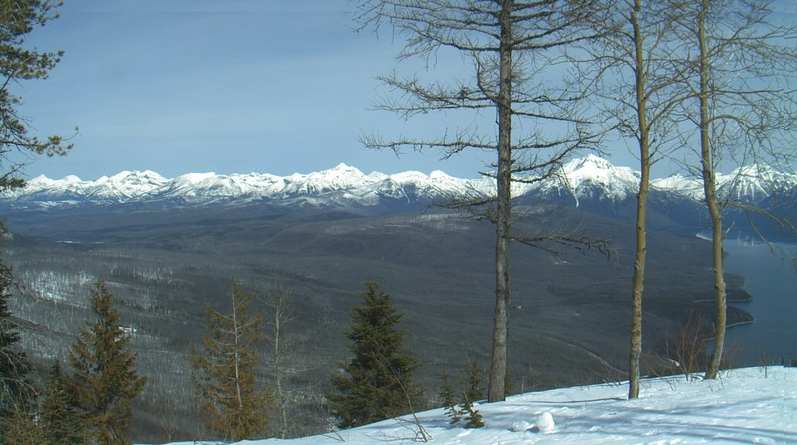

Montana contains a variety of national parks and recreational area, including two national parks, a national historical park, a national historic trail, a national historic site, a national recreation area, and a national battlefield.
In addition to the national facilities, over 50 state parks are located throughout the state. Some of the greatest natural and cultural treasures on earth are located in these parks and recreational areas.
Some of the highlights of this state include the following:
Special events are posted on the parks calendar as they are scheduled. Most of the events are free.
Roberto Olivera
August 25, 2014